RTESArenaAssist是一款在你游玩《上古卷轴：竞技场》时提供辅助的应用。它会在游戏旁边显示翻译、地图、日志、记录、存档管理、截图、词典和手册。
文中的图片是在使用Assist的显示语言、“深色”主题、默认设置且未连接的状态下截取的。连接之后，显示内容会随当前的竞技场画面和游戏状态而变化。
Assist的基本用法是：启动竞技场，用Assist连接，再点击 ⊞ 按钮进入布局模式开始游玩。在布局模式下，可以把DOSBox游戏画面与Assist的翻译、地图等标签页排列在同一个屏幕上，无需用Alt+Tab切换即可随时查看。
设置的详细说明，请参阅本手册的“设置对话框”一页。
公开版不包含竞技场的原始文本数据。首次运行时，Assist会根据你电脑上的竞技场文件夹生成翻译文件。
首先选择Assist的显示语言。你选择的语言会立即在此画面生效。
| 控件 | 说明 |
|---|---|
| 语言下拉框 | 选择Assist界面的语言。此画面只提供日语、English和Español。若要使用其他语言，请在启动后到设置对话框“常规”标签页的“显示语言”中选择。 |
| 下一步 | 继续指定竞技场文件夹。 |
如果在竞技场运行的状态下继续，Assist会从正在运行的竞技场自动检测安装位置。如果无法检测到，请用 浏览… 指定竞技场的数据文件夹。

| 项目 | 说明 |
|---|---|
| 游戏安装文件夹 | 指定竞技场的 ARENA 文件夹。 |
| 浏览… | 通过文件夹选择对话框指定竞技场文件夹。 |
| 重新检测 | 重新检测正在运行的竞技场。 |
| 生成翻译文件 | 找到有效的竞技场文件夹后，继续生成翻译文件。 |
Assist会根据竞技场文件夹中的数据生成翻译文件。完成后会打开主窗口。
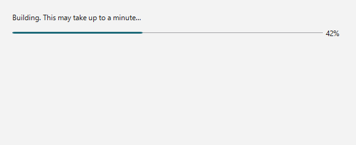
生成过程中会显示进度条和当前步骤。数据也会从正在运行的竞技场中读取，因此在完成之前请不要关闭竞技场。
Assist的顶部是连接栏，中间是标签页区域，底部是状态栏。
Assist在刚启动时处于未连接状态。在竞技场 / DOSBox运行的情况下，点击右上角的 连接 按钮。
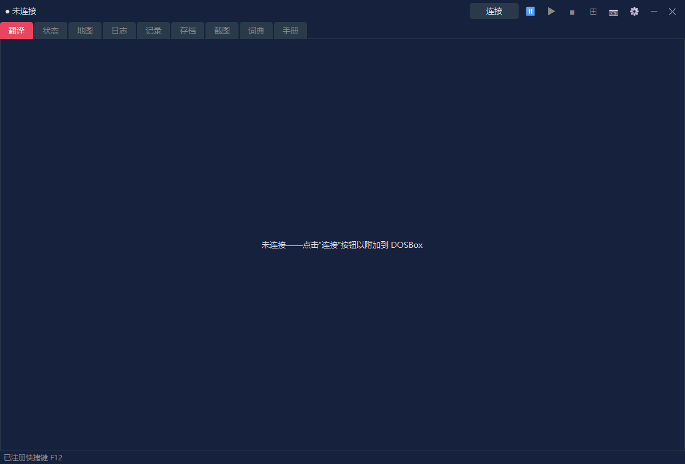
| 区域 | 说明 |
|---|---|
| 连接状态 | 显示“未连接”；连接后则显示识别到的画面名称、IMG名称等。 |
| 连接 / 断开 | 连接到DOSBox中的竞技场，或断开连接。 |
⏸ / ▶ / ■ | 暂停 / 继续 / 停止朗读。在设置对话框的“朗读”标签页中启用朗读后才可使用（默认关闭）。 |
⊞ | 切换布局模式。右键点击可打开布局菜单。 |
📷 | 保存截图。在布局模式下，整个布局会保存为一张图片。游戏画面（DOSBox）处于焦点时，也可以用快捷键（默认为 F12）以同样的方式保存。 |
⚙ | 打开设置对话框。 |
启动后状态栏中显示的“已注册快捷键 F12”表示截图快捷键已可使用。你可以在设置对话框的“常规”标签页中更改该按键。
连接后，连接栏的最左端会显示识别到的画面名称。下面的示例是连接到竞技场标题画面时的情形。

该画面使用的IMG名称也会显示在画面名称的右侧（标题画面等不使用IMG的画面不会显示）。在设置对话框的“显示”标签页中，可以选择是否显示画面名称和IMG名称。
Assist是按照在布局模式下使用来设计的。在普通窗口中标签页同样可以使用，但在布局模式下，你可以把游戏画面、翻译、地图、记录等固定在同一个屏幕上，一起查看。
在默认布局中，DOSBox游戏画面位于左侧，Assist的主标签页位于右侧，辅助面板位于底部。游玩时，你可以在右侧查看地图或日志，并在底部面板或翻译标签页中查看当前画面的翻译。
| 操作 | 说明 |
|---|---|
左键点击 ⊞ | 开始 / 结束布局模式。 |
右键点击 ⊞ | 可以选择布局形式、放置的角落、跟随模式、重新排列、始终置顶等。 |
📷 | 在布局模式下，将包含DOSBox和Assist的整个布局保存为一张图片。 |
断开 | 断开与竞技场的连接。先结束布局模式再断开，更便于整理屏幕。 |
各标签页的截图用于展示画面的组成。连接后，显示内容会根据当前的竞技场画面和游戏状态更新。
这是显示当前画面翻译的核心标签页。显示内容会随情境切换：标题画面、角色创建、对话、设施、物品、法术等。

| 显示 | 说明 |
|---|---|
| 译文 | 显示当前画面或事件的翻译。 |
| 原文 | 根据设置，也会同时显示对应的英文原文。 |
| 专用视图 | 职业列表、种族列表、装备、设施列表、购买列表等会切换为专用的易读视图。 |
通过设置中的“战斗信息”标签页，也可以在翻译标签页中显示战斗信息。选择“战斗与常规显示”或“完整战斗显示”，再选择“文本”或“敌人计量条”。默认为“关闭”，保持通常的翻译标签页显示。
此标签页显示角色的属性和状态。角色创建之后，或在游玩中保持连接时，会显示状态信息。
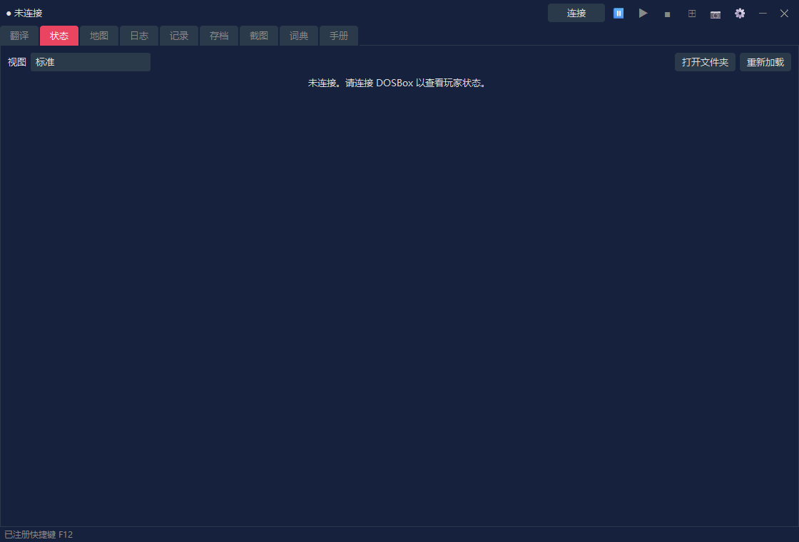
| 显示 | 说明 |
|---|---|
| 视图 | 选择“标准”（此前使用的显示）或某一种样式（角色表）。状态界面以及翻译标签页中的属性分配也会使用这里选择的视图。 |
| 属性 | 显示力量、智力等主要属性。 |
| 状态数值 | 显示HP、疲劳、法术点数等。 |
| 修改数值 | 修改属性等操作，仅在你明确启用作弊设置时才可使用（在“标准”视图中）。 |
此功能以你选择的样式显示状态。如果在“视图”中选择了“标准”以外的项目，状态就会以所选样式显示。样式是一个HTML文件（模板），内置了8种样式，你也可以自己制作。部分样式会显示面孔和全身像（包括装备）、角色的状态（疾病、中毒、麻痹等），以及各身体部位的护甲等级（根据装备计算出的数值，越低防护越好）。面孔和全身像是根据你的竞技场文件制作的。
| 控件 | 说明 |
|---|---|
| 打开文件夹 | 打开存放你自己的角色表（HTML文件）的文件夹，即与 RTESArenaAssist.exe 位于同一位置的 character_sheets。首次打开时，会在其中放入内置样式的副本。放入其中的文件会出现在“视图”列表中，并带有“（文件夹）”标记。 |
| 重新加载 | 重新加载文件夹中的角色表。修改文件后请点击此按钮。 |
内置样式一览、角色表的工作方式，以及可插入的数值和写法，请参阅本手册的“状态界面样式（角色表）”一页。
此标签页显示地下城、城市、野外、室内等的自动地图。显示内容会随你在游戏中的当前位置更新。
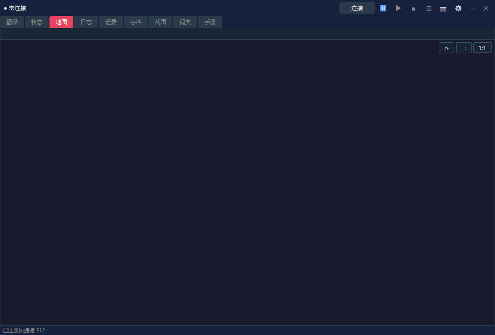
| 显示 | 说明 |
|---|---|
| 当前位置 | 根据已连接游戏的状态，显示当前地图和位置。 |
| 自动地图 | 绘制已探索的区域、墙壁、入口、野外地形等。 |
| 显示设置 | 网格、区块坐标、野外扩展显示等可以在设置对话框中调整。 |
在此标签页中，你可以用自己的显示语言阅读游戏日志（Logbook / Journal）中记录的内容。
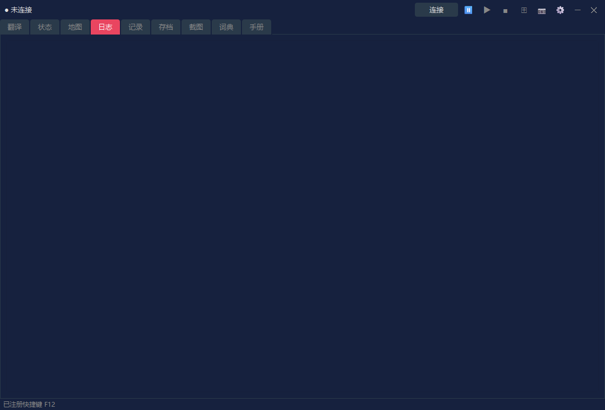
| 显示 | 说明 |
|---|---|
| 日期与标题 | 显示每条日志的日期和概要。 |
| 正文 | 用你的显示语言显示日志正文。 |
| 更新 | 游戏中的日志更新时，Assist的显示也会随之更新。 |
在此标签页中，你可以把Assist显示过的翻译作为历史记录回顾。想重读错过的内容时很有用。
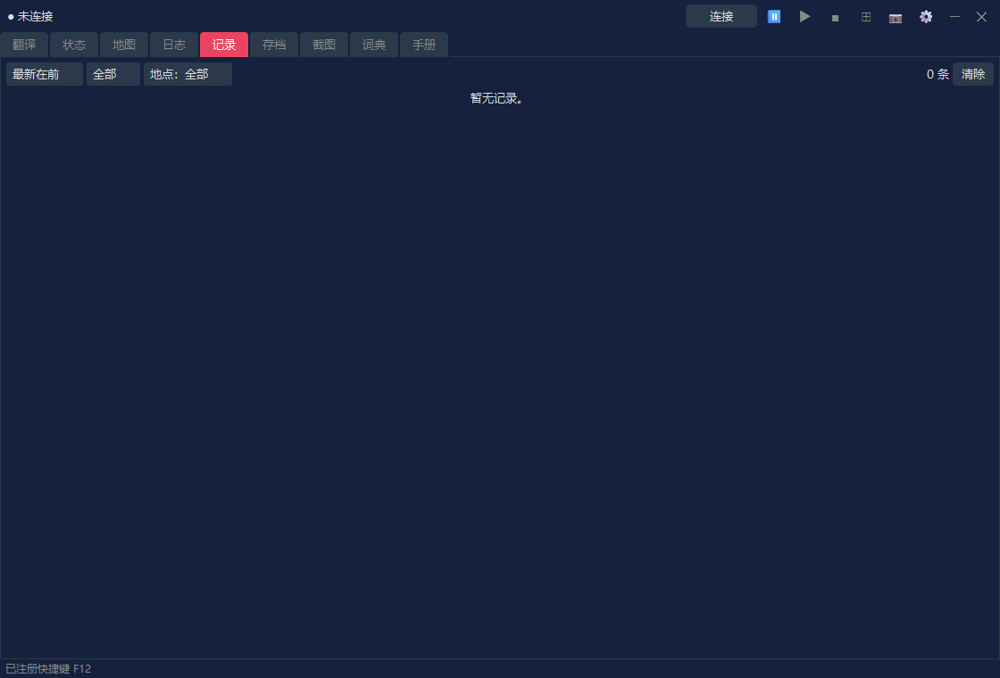
| 控件 | 说明 |
|---|---|
| 排序 | 在“最新在前”和“最早在前”之间切换。 |
| 筛选 | 按分类或地点缩小记录范围。 |
| 清除 | 清除正在显示的记录。 |
如果你启用了保存战斗日志且已有记录，就可以在记录标签页中切换“常规日志”和“战斗日志”。如果没有战斗日志，则和以前一样只显示常规日志。
此标签页管理竞技场的存档位和备份。它为还原前的自动备份等存档数据操作提供辅助。
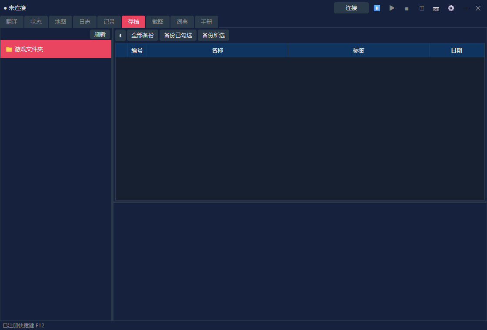
| 控件 | 说明 |
|---|---|
| 存档位列表 | 列出竞技场的存档位。 |
| 备份 | 备份所选的存档。 |
| 还原 | 从备份还原存档数据。 |
| 删除 | 删除不再需要的备份或存档。 |
在此标签页中，你可以查看用 📷 按钮保存的截图。在布局模式下截取的图片也可以在这里打开。
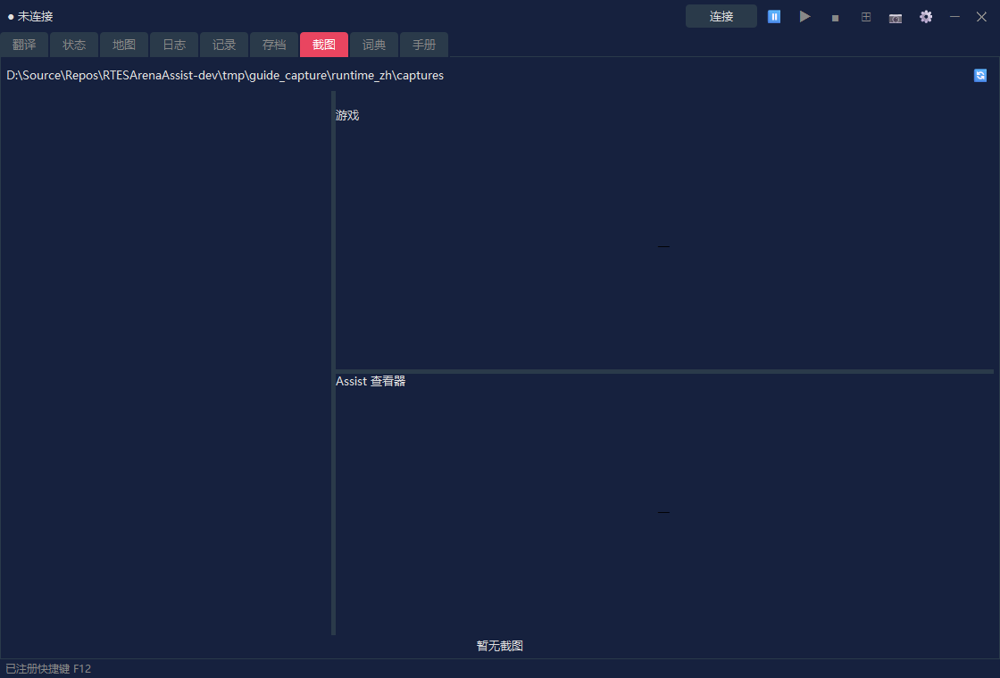
| 控件 | 说明 |
|---|---|
| 列表 | 显示已保存的截图。 |
| 预览 | 可以查看所选的图片。 |
| 锁定 | 保护想要保留的图片，避免被删除。 |
| 删除 | 删除所选的图片或不再需要的图片。 |
此标签页用于搜索Assist的翻译词典和地下城文本。你可以用它查找游戏中出现的词语和句子。
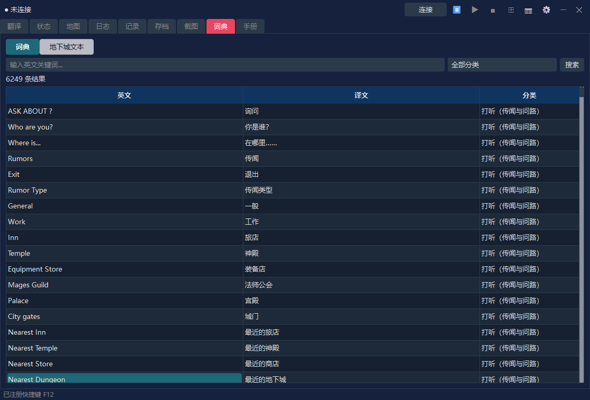
| 显示模式 | 说明 |
|---|---|
| 词典 | 按英文关键词、译文和分类搜索。 |
| 地下城文本 | 搜索并显示来自INF的地下城文本。 |
在此标签页中，你可以用自己的显示语言阅读竞技场基本操作和系统的说明，以及Assist功能的说明。游玩时想确认操作或术语，可以在这里查看。
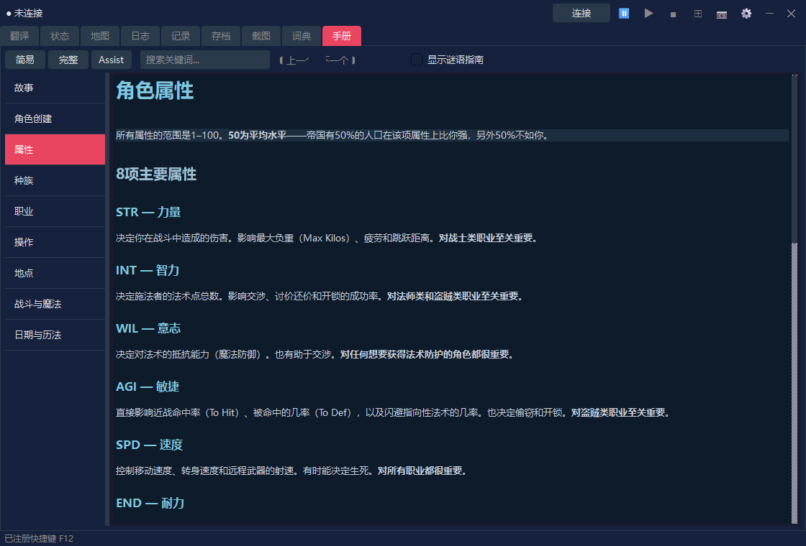
| 控件 | 说明 |
|---|---|
| 简易 / 完整 / Assist | 切换显示的内容（见下表）。 |
| 关键词搜索 | 搜索手册。 |
| 左侧列表 | 在故事、角色创建、操作、战斗与魔法等章节之间切换。 |
| 切换项 | 内容 | 语言 |
|---|---|---|
| 简易 | 游戏说明（9章） | 12种语言 |
| 完整 | 官方手册的译本（导入翻译包后显示） | 目前仅有日语 |
| Assist | Assist功能的说明（基本操作、设置对话框、状态界面样式（角色表）） | 12种语言 |
完整版（官方手册的译本）
在“完整”中，你可以阅读官方手册（玩家指南及其附录）的译本。译本与应用本体分开发布，以每种显示语言一个翻译包（RTESArenaAssist-manual-<language>.zip）的形式，提供在手册下载页面上（目前仅有日语）。首次使用时，请按以下步骤导入翻译包。
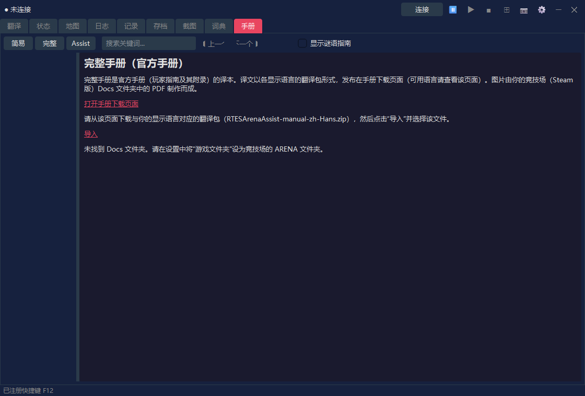
手册中的图片是根据你的竞技场（Steam版）Docs 文件夹中的 Player Guide.pdf 制作的。如果找不到该PDF或版本不同，则只显示文字。请检查设置中的“游戏文件夹”并点击“重新制作图片”，图片就会一并显示。导入之后，你可以删除下载的文件。Assist本身不会连接互联网（下载是在你自己的浏览器中进行的）。
“完整”中还会显示一个链接，用于打开 Docs 文件夹中的官方手册（英文PDF）。当显示语言为英语时，不显示翻译包，只显示此链接。
连接，连接到竞技场 / DOSBox。⊞ 进入布局模式。📷 或快捷键（默认为 F12）截图。⊞ 结束布局模式，必要时再点击 断开。布局模式的显示大小、布局形式、翻译面板、截图文件夹等，都可以在设置对话框中调整。若要朗读翻译，还需要在设置对话框的“朗读”标签页中启用。